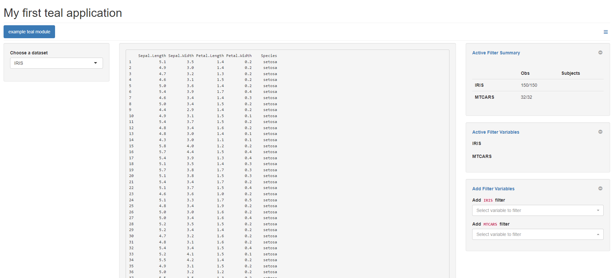

Getting Started with Teal
NEST CoreDev
2022-11-03
teal.Rmd
Introduction
teal is a shiny-based interactive exploration framework for
analyzing data, with particular emphasis on CDISC clinical trial data.
teal applications provide their users with:
- Ability to “pull” in data from external data sources
- Dynamic filtering of data to be used in the analyses
- Ability to generate reproducible code to regenerate the on-screen analyses
- Ability to create and download reports containing results of analyses (for analysis modules which support reporting)
In addition, the teal framework also provides
application developers with:
- A large suite of customizable standard analysis modules to be included in applications
- A logging framework to facilitate debugging of applications
More advanced users of the framework can also create new analysis modules which can be added into any teal applications. See the Creating Custom Modules vignette for a brief introduction to creating modules.
Your first teal application:
This simple application takes the iris and
mtcars datasets and displays their contents in a
teal application:
library(teal)
app <- init(
data = teal_data(
dataset("IRIS", iris),
dataset("MTCARS", mtcars)
),
modules = example_module(),
header = "My first teal application"
)
if (interactive()) {
runApp(app)
}
As shown in the image above, this application consists of several distinct areas:
- Application header: The title of the application shown at the top.
- A filter panel (panels on the right hand side): for filtering the
data to be passed into all
tealmodules. -
tealmodules (accessible via a set of tabs): in this case a simple module named “example teal module”. - An encoding panel (panel on the left hand side): Module specific UI components, in this case a drop-down to select a dataset name.
- Main output panel (panel on the middle): The outputs of the module, for this example module the chosen dataset is displayed.
Filter panel
The filter panel allows users to select parts of the datasets they wish to use in the modules. The top panel shows the number of records which remain after filtering.
In the example below:
- For the
IRISdataset, only rows satisfying the conditionsPetal.Length >= 3.4andSpecies %in% c("setosa", "virginica")are included thereby keeping 50 rows. - For the
MTCARSdataset, only rows satisfying the conditioncyl %in% c(4, 6)are included, thereby keeping 18 rows.

Encoding panel
The left hand side of the application is (usually) dedicated to module specific controls. For modules which include reproducibility functionality, it often contains a “Show R Code” button which when clicked will show the code required to re-generate the output (including any filters added on the filter panel and library calls to load required packages).
Creating your own applications
init is the key function to use to create your
teal application and it requires two key arguments:
data and modules.
Application Data
The data argument to the init function
specifies the data used by your application. This can contain data
currently in your R session, as in the example above, but also can
contain connectors which describe where to “pull” data from
when the application is run. This can be used to allow data to be pulled
into teal applications from external sources which require
your application users to enter credentials.
In the example above we call teal_data to convert the
raw datasets into teal specific datasets and to bind them
in one R object. This function can also be used to specify
relationships between different datasets. In order to use CDISC clinical
trial data in a teal application the
cdisc_data function is used instead.
For further details we recommend exploring the teal.data
package documentation.
Modules
The modules argument to init consists of a
list of teal modules (which can be wrapped together using
the function modules). We recommend creating applications
using pre-defined teal modules. See the references below
for links to these modules.
Defining filters
The init function has an additional argument
filters which allows you to initialize the application with
certain filters pre-selected. See the documentation for
init for further details.
Reporting
If any of the modules in your teal
application support reporting (see teal.reporter
for more details) then users of your application can add these outputs
to a report. This report can be downloaded and a special “Report
Previewer” module will be added to your application as an additional tab
so your users can view and configure their reports before downloading
them.
Where to go next
To learn more about the teal framework we recommend
first exploring some of the available analysis modules.
Known bugs
- It could be needed to use
options(shiny.useragg = FALSE)to make theteal::initapps more stable, tillraggpackage is not fixed. It is recommended to put this option in the.Rprofilefile.
For example see:
- general analysis modules
- clinical trial reporting modules
- modules
for analyzing
MultiAssayExperimentobjects
The teal framework relies on a set of supporting
packages whose documentation provides more in-depth information. The
packages which are of most interest when defining
tealapplications are:
-
teal.data: defining data fortealapplication. -
teal.transform: defining the way arguments are passed intotealmodules.